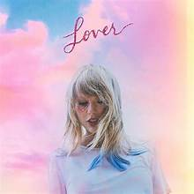

Portada del álbum

Historia
*Lover* fue lanzado el 23 de agosto de 2019. Taylor lo describió como “un álbum de amor, en todas sus formas”. Incluye himnos como ME!, You Need To Calm Down y la balada Lover. Fue el primer álbum que lanzó bajo su propio control tras dejar Big Machine Records.
Opciones extra
Ctrl + L para abrir Lover.
Error 2019: romanticismo detectado
Variable x = año de lanzamiento.
Lover — canción que da nombre al álbum.
“Can I go where you go?”